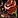
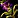
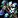
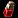
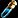
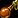
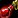
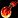

This WoW Classic Alchemy Leveling guide will show you the fastest way how to level your Classic Alchemy skill up from 1 to 300 as inexpensively as possible.
This WoW Classic Alchemy Leveling guide will show you the fastest way how to level your Classic Alchemy skill up from 1 to 300 as inexpensively as possible.
Alchemy is the best combined with Herbalism, with these two you can save a lot of gold because you don't have to buy the herbs from the Auction House. Check out my Classic Herbalism leveling guide 1-300 if you want to level herbalism.
I recommend trying Zygor's 1-60 Leveling Guide if you are still leveling your character or just starting a new alt. It will help you to reach level 60 a lot faster.
Shopping List
Below is the full list of materials needed to level Alchemy. There are a lot of yellow recipes used in the guide, which means you won’t gain skill points every single time. I’ve included 10-20 extra herbs for most of these recipes, but if you get unlucky, you may need to gather or buy a few more.
- 65x Peacebloom
- 65x Silverleaf
- 85x Empty Vial
- 100x Briarthorn
- 35x Bruiseweed
- 105x Leaded Vial
- 20x

Mageroyal - 50x Stranglekelp
- 35x Liferoot
- 35x

Kingsblood - 35x Goldthorn
- 5x Wild Steelbloom
- 75x Sungrass
- 15x Khadgar's Whisker
- 120x Crystal Vial
- 45x Arthas' Tears
- 60x

Blindweed - 75x Golden Sansam
- 20x Mountain Silversage
Classic Alchemy Trainers
You can learn Classic Alchemy from any of these NPCs below. Click on the links to see the trainer's exact location.
You can also walk up to a guard in any city and ask where the Alchemy trainer is, then it will be marked with a red flag on your map.
Horde trainers:
 Whuut in Orgrimmar.
Whuut in Orgrimmar.- Doctor Martin Felben in Undercity.
- Kray in Thunder Bluff
- Carolai Anise in Tirisfal Glades.
- Miao'zan in Durotar.
Alliance trainers:
 Vosur Brakthel in Ironforge.
Vosur Brakthel in Ironforge.- Tel'Athir in Stormwind City.
- Milla Fairancora in Darnassus.
- Alchemist Mallory in Elwyn Forest.
- Cyndra Kindwhisper in Teldrassil.
Leveling Classic Alchemy
1 - 60
65x 
You'll need these later, so keep all of them.
Learn Journeyman Alchemy
You can only train Alchemy past 75 if you learn Journeyman Alchemy. (Requires character level 10) Not every Alchemy trainer will teach you this skill, you will need to find an Expert Alchemist.
You can learn Journeyman Alchemy from these NPCs below:
Horde trainers:
- Yelmak in Orgrimmar.
- Doctor Marsh in Undercity
- Bena Winterhoof in Thunder Bluff.
Alliance trainers:
- Lilyssia Nightbreeze in Stormwind City.
- Sylvanna Forestmoon in Darnassus.
- Tally Berryfizz in Ironforge.
60 - 140
- 60 - 110
65x Lesser Healing Potion - 65 Minor Healing Potion, 65 Briarthorn
- 110 - 140
35x Healing Potion - 35 Bruiseweed, 35 Briarthorn, 35 Leaded Vial
Expert Alchemy
You can only train Alchemy past 150 if you learn Expert Alchemy. (Requires character level 20) Not every Alchemy trainer will teach you this skill, you will need to find an Artisan Alchemist.
Horde players can learn Expert Alchemy from  Doctor Herbert Halsey in Undercity. Alliance players can learn it from
Doctor Herbert Halsey in Undercity. Alliance players can learn it from  Ainethil in Darnassus.
Ainethil in Darnassus.
Recipe to buy
Buy the  Recipe: Superior Mana Potion before you leave Darnassus / Undercity! You will need this recipe later at 265, so you can save some time if you buy it now while you are already close to the NPCs who sell it.
Recipe: Superior Mana Potion before you leave Darnassus / Undercity! You will need this recipe later at 265, so you can save some time if you buy it now while you are already close to the NPCs who sell it.
The recipe is sold by  Ulthir in Darnassus and by
Ulthir in Darnassus and by  Algernon in Undercity. It's a limited supply item, so just keep checking until it's back "in stock" if someone bought it before you. (or buy it from the AH)
Algernon in Undercity. It's a limited supply item, so just keep checking until it's back "in stock" if someone bought it before you. (or buy it from the AH)
140 - 155
20x 
This recipe will be yellow for the last 10 points, so you might have to make a few extra.
Make 
155 - 185
35x 
If you made Fire Oil, you can use it to make 
185 - 210
30x Elixir of Agility - 30 Stranglekelp, 30 Goldthorn, 30 Leaded Vial
If you don't have that many Goldthorn, make Mana Potion or Lesser Invisibility Potion up to around 195.
If you don't have any Goldthorn at all, you can make Nature Protection Potion between 190-215
 Recipe: Nature Protection Potion is sold by these vendors. It's a limited supply item, so it can take a while to respawn when someone else purchases the recipe before you.
Recipe: Nature Protection Potion is sold by these vendors. It's a limited supply item, so it can take a while to respawn when someone else purchases the recipe before you.
Artisan Alchemy
You can only train Alchemy past 225 if you learn Artisan Alchemy. (Requires character level 35) Not every Alchemy trainer will teach you this skill, you will need to find a Master Alchemist.
Horde players can learn Artisan Alchemy from  Rogvar in Swamp of Sorrows at Stonard.
Rogvar in Swamp of Sorrows at Stonard.
Alliance players can learn it from  Kylanna Windwhisper in Feralas at Feathermoon Stronghold.
Kylanna Windwhisper in Feralas at Feathermoon Stronghold.
210 - 265
- 210 - 215
5x Elixir of Greater Defense - 5 Steelbloom, 5 Goldthorn, 5 Leaded Vial
- 215 - 230
15x Superior Healing Potion - 15 Sungrass, 15 Khadgar's Whisker, 15 Crystal Vial
- 230 - 265
45x Elixir of Detect Undead - 45 Arthas' Tears, 45 Crystal Vial
265 - 285
30x Superior Mana Potion - 60 Sungrass, 60 Blindweed, 30 Crystal Vial
The recipe is sold by  Ulthir in Darnassus and by
Ulthir in Darnassus and by  Algernon in Undercity. It's a limited supply item, so just keep checking until it's back "in stock" if someone bought it before you. (or buy it from the AH) It's possible you already bought it when you trained Expert Alchemy, so check your inventory first.
Algernon in Undercity. It's a limited supply item, so just keep checking until it's back "in stock" if someone bought it before you. (or buy it from the AH) It's possible you already bought it when you trained Expert Alchemy, so check your inventory first.
285 - 300
20x Major Healing Potion - 40 Golden Sansam, 20 Mountain Silversage, 20 Crystal Vial
The recipe is sold by Evie Whirlbrew in Winterspring at Everlook. It's a limited supply recipe, so you have to wait if someone bought it before you. (or buy it from the Auction House)
Congratulations on reaching 300! Please send feedback about the guide if you think there are parts I could improve, or you found typos, errors, wrong material numbers!